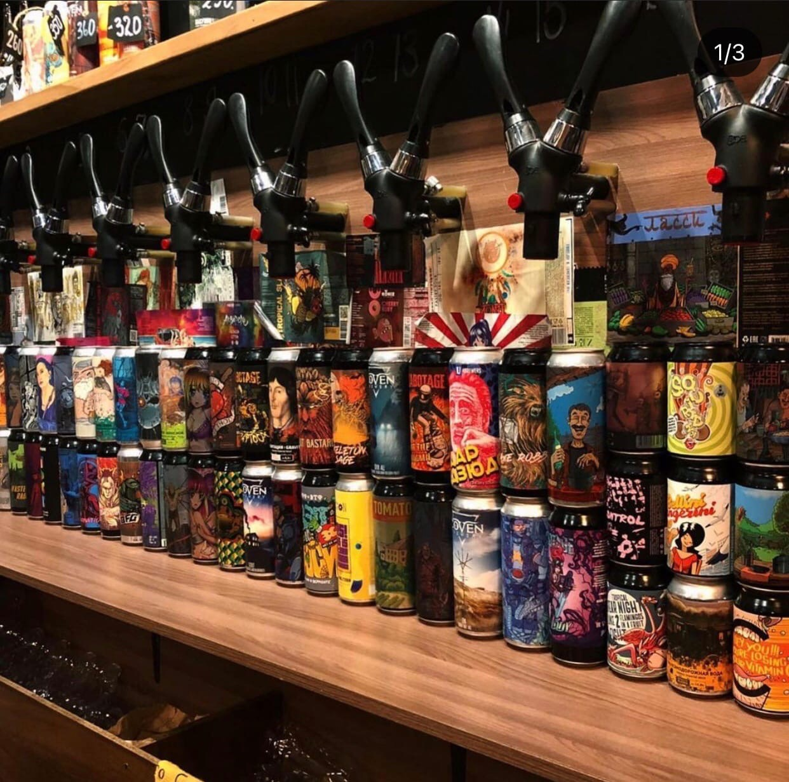
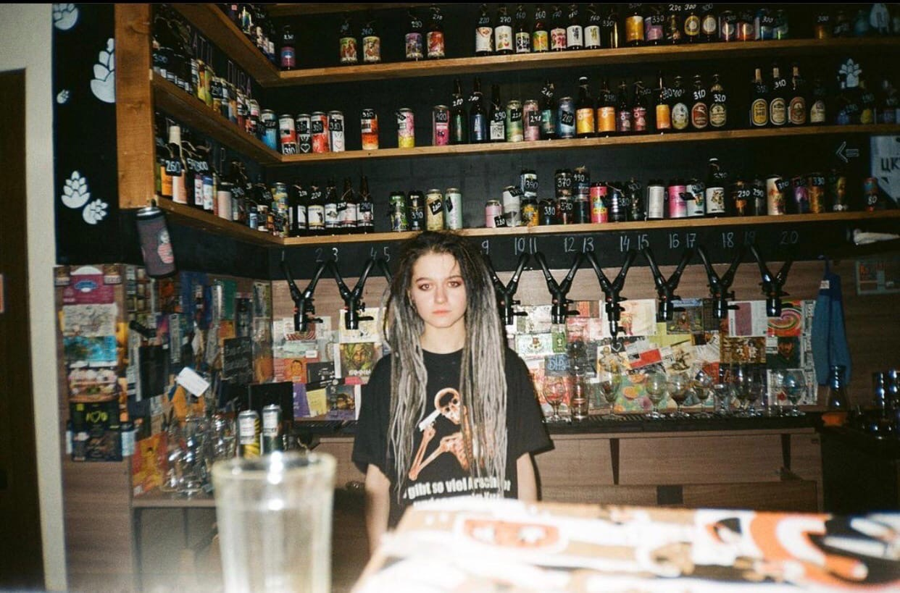
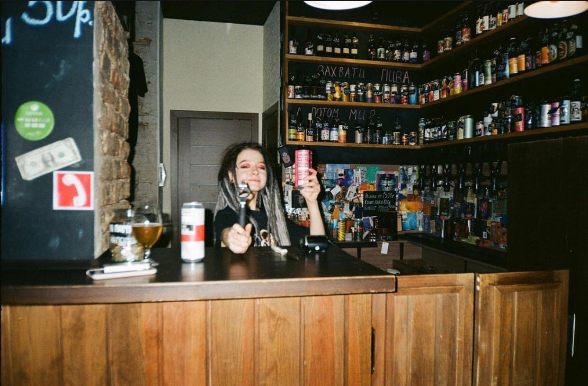

Что нужно знать о крафте?
Дебаты о том, что означает данный термин, ведутся уже несколько десятков лет. Не затихают они и сегодня. Среди основных характеристик, которые отличают крафтовое пиво, прежде всего, называют производственные. Считается, что подобные напитки должны вариться на небольших производствах, в том числе семейных. Объемы выпускаемых партий также не предполагают массовости. Это такой камерный продукт, не для всех, более дорогой, но в то же время имеющий неповторимый вкус. Он готовится пивоваром, как художником рисуется картина – во имя творчества и самовыражения. Американцы говорят: «Крафтовое пиво не должен варить маркетолог».
Важный аспект производства – натуральное качественное сырье, основу которого составляет солод. Ингредиенты – традиционные, рецептуры – оригинальные, авторские. Если применяются добавки, то это делается лишь для придания особых вкусовых нот. Вишневое пиво, бывшее ранее новинкой, сегодня уже воспринимается как позавчерашний день. Дегустаторы стремятся попробовать хмельной напиток с арбузом или перцем чили.
 Крафтовое пиво не принято рекламировать. Продукт продает сам себя, именно поэтому большую роль играет красочная, запоминающаяся этикетка и умение соответствовать предпочтениям потребителей. Двигателем продаж выступает сарафанное радио. Это обуславливает необходимость постоянно развиваться, создавая современный модный продукт.
Крафтовое пиво имеет свои сорта, которые обязательно пишутся на этикетке. Обычно они обозначаются английскими словами или аббревиатурами. Самые распространенные виды – это семейство Pale Ale (PA), то есть светлый эль, имеющий солодовый вкус и легкую горчинку. Например, Indian Pale Ale (IPA) – индийский светлый эль, с большим содержанием алкоголя и выраженным привкусом хмеля, а также Double Indian Pale Ale (DIPA) – двойной индийский эль, самый горький, крепкий и хмелевой напиток.
